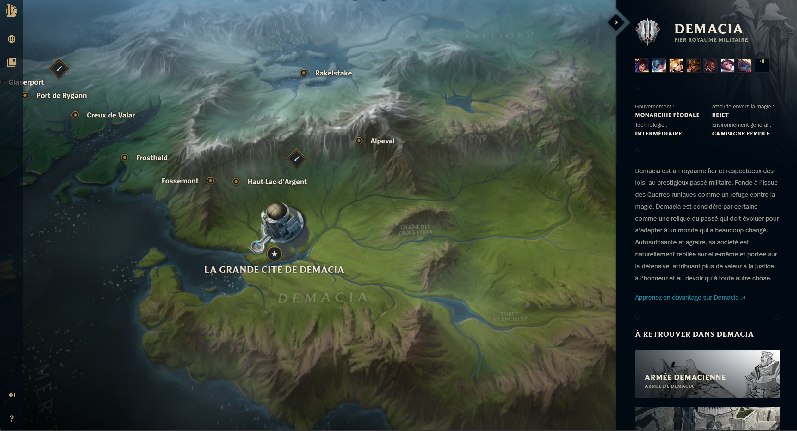

Sylas
Révolutionnaire déchaîné
En tant que mage né dans une famille pauvre de Demacia, Sylas de Liebourg était sans doute maudit dès sa naissance. Malgré leur faible niveau social, ses parents croyaient fermement aux idéaux de leur pays. Ainsi, quand ils découvrirent que leur fils était « affecté » par la magie, ils firent en sorte de le convaincre de se livrer aux traqueurs de mages du royaume.
Prenant acte de l'étrange capacité du garçon à percevoir la magie, ils se servirent de Sylas pour identifier les autres mages vivant parmi les citoyens. Pour la première fois de sa vie, il sentait qu'il avait un avenir au service de sa patrie, et il accomplissait sa tâche avec ferveur. Il était fier, mais solitaire, privé de tout contact avec quiconque, à l'exception de ses surveillants.
Au fur et à mesure de sa mission, Sylas commença à constater que la magie était bien plus fréquente que Demacia voulait bien l'admettre. Il percevait même le frémissement d'un pouvoir dissimulé chez les personnalités les plus riches et éminentes… parmi lesquelles quelques-uns des plus fervents détracteurs des mages. Mais si les pauvres étaient punis de leur affliction, l'élite paraissait au-dessus de la loi. Cette hypocrisie sema dans l'esprit de Sylas les premières graines du doute.
Ces doutes finirent par éclore lors d'un événement tragique au cours duquel Sylas et ses surveillants croisèrent la route d'une mage qui vivait à la campagne. Ayant découvert qu'il ne s'agissait que d'une petite fille, Sylas se prit de pitié pour elle. Quand il se plaça devant elle pour servir de bouclier contre les traqueurs de mages, il effleura accidentellement sa peau. La magie de la petite fille se propagea dans le corps de Sylas mais, au lieu de le tuer, elle déferla de ses mains sous la forme d'explosions brutes et incontrôlées. C'était un talent qu'il ignorait posséder et qui entraîna la mort de trois personnes, dont son tuteur.
Sachant qu'il serait traité comme un meurtrier, Sylas préféra fuir, gagnant bien vite la triste réputation d'être l'un des plus dangereux mages de Demacia. Quand les traqueurs de mages le retrouvèrent, ils ne firent en effet preuve d'aucune pitié.
Malgré sa jeunesse, Sylas fut condamné à la prison à vie.
Il croupit dans les profondeurs obscures de l'enceinte des traqueurs de mages, contraint de porter de lourds fers fabriqués à partir de pétricite absorbant la magie. Dépossédé de sa vision arcanique, le jeune homme laissa son cœur devenir plus dur que la pierre qui l'entravait. Il rêvait de se venger de tous ceux qui l'avaient placé ici.
Au bout de quinze années de malheur, une jeune volontaire des Illuminateurs nommée Luxanna commença à lui rendre visite. Malgré ses chaînes, Sylas reconnut en elle une mage particulièrement puissante et, au fil du temps, se forgea entre eux un lien secret et inhabituel. En échange du savoir de Sylas sur le contrôle de la magie, Lux lui parlait du monde à l'extérieur de sa cellule et lui apportait les livres qu'il réclamait.
En fin de compte, par une minutieuse manipulation, il réussit à convaincre la jeune femme de lui faire passer clandestinement un grimoire interdit : les écrits originaux du grand sculpteur Durand, détaillant ses travaux avec la pétricite.
Ceux-ci révélèrent à Sylas les secrets de la pierre. Elle était à la base de la défense de Demacia contre la sorcellerie délétère, mais il finit par comprendre qu'au lieu de faire disparaître la magie, elle l'absorbait.
Alors si le pouvoir se trouvait contenu dans la pétricite, se demanda Sylas, pouvait-il l'en libérer…?
Tout ce qu'il lui fallait, c'était une source de magie. Une source telle que Lux.
Mais elle ne rendit plus jamais visite à Sylas. Sa famille, la lignée immensément puissante des Crownguard, avait eu vent de leur rapprochement et était furieuse que Lux ait violé la loi pour aider cet odieux criminel. Sans aucune explication, il fut décidé que Sylas serait exécuté.
Lux monta sur l'échafaud pour supplier de sauver la vie de son ami, mais ses implorations restèrent vaines. Quand le bourreau la poussa pour lever son épée, Sylas parvint à toucher Lux. Comme il l'avait prédit, son pouvoir se déversa à l'intérieur, lui donnant l'occasion de le déchaîner. De cette magie dérobée, Sylas rompit ses fers et n'épargna que la jeune Crownguard, terrifiée.
Il quitta l'enceinte des traqueurs de mages non comme un paria, mais comme un nouveau symbole de défiance pour les faibles et les persécutés de Demacia. Arpentant le royaume en secret, il a réuni derrière lui de nombreux mages exilés… Mais peut-être savait-il dès le départ que même leur puissance combinée ne serait pas suffisante pour renverser la couronne.
Cela expliquerait pourquoi, accompagné de ses disciples les plus fidèles et de quelques bœufs robustes, Sylas finit par s'aventurer au-delà des montagnes septentrionales jusqu'aux toundras gelées de Freljord.as finit par s'aventurer au-delà des montagnes septentrionales jusqu'aux toundras gelées de Freljord.